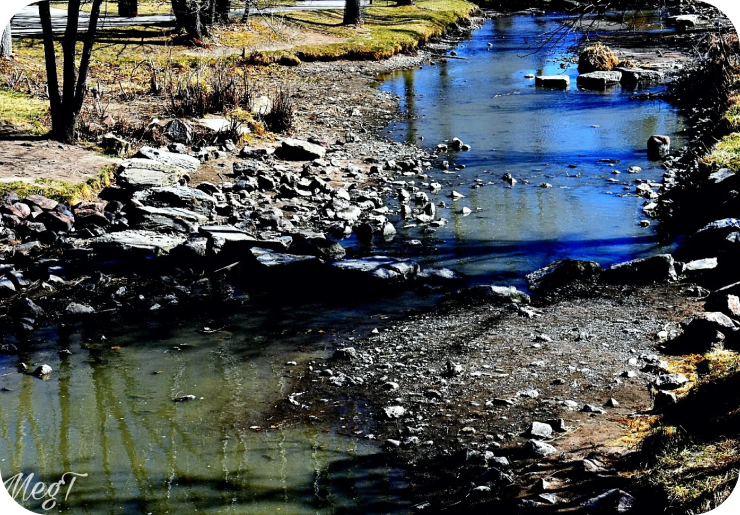

Poluição marinha
A poluição marinha é um dos maiores desafios ambientais, ameaçando nossos oceanos que regulam o clima, produzem oxigênio e mantêm a biodiversidade. Plásticos, produtos químicos tóxicos e resíduos industriais contaminam os mares, afetando a vida marinha e, consequentemente, os humanos que dependem desses recursos. Para combater esse problema, precisamos adotar práticas sustentáveis, como reduzir o uso de plásticos descartáveis e reciclar corretamente. É essencial também pressionar governos e empresas a implementarem políticas que diminuam a poluição e protejam os ecossistemas marinhos. A educação é fundamental. Informar-se e compartilhar conhecimentos sobre os impactos da poluição marinha pode inspirar ações coletivas e individuais. Projetos de educação ambiental e campanhas de conscientização são eficazes para promover uma mentalidade de respeito ao meio ambiente. Cada um de nós pode fazer a diferença. Ao cuidar dos oceanos, protegemos o futuro do planeta e garantimos um legado saudável para as próximas gerações.